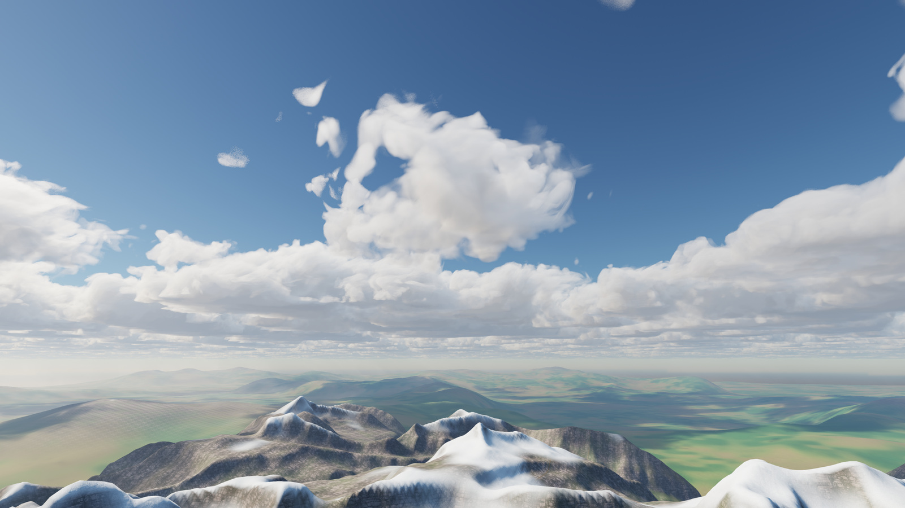
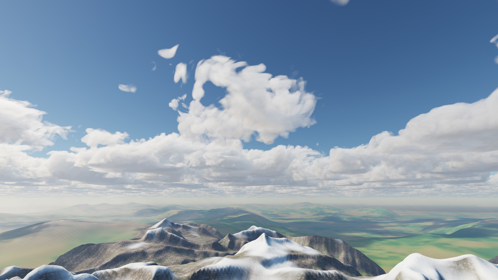
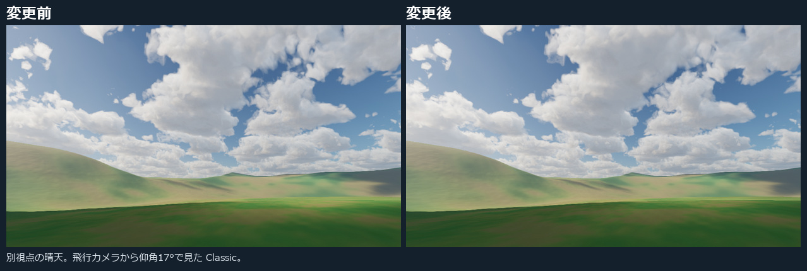
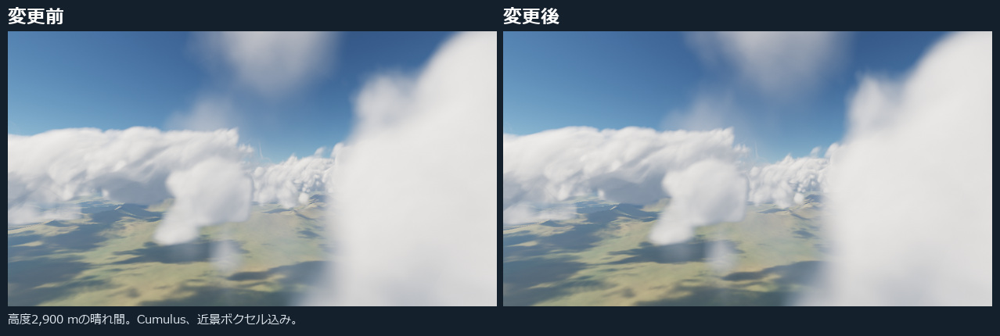
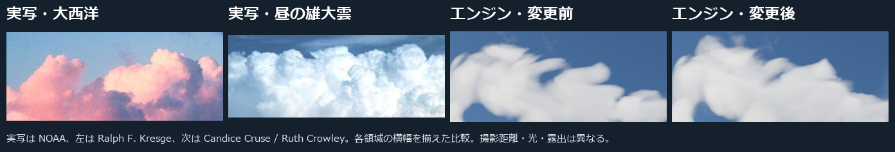

同じ視点の4K比較
RTX 5080 で撮影した同じ視点の4K画像を、1600×900 に縮小して重ねています。左が変更前、右が変更後です。




別の空から見た比較
地上からは雲底と群れの間の空がよく見えます。晴れ間の場面では、隣り合う房が重なった場所でも、同じ形が繰り返されて見えないかを追えます。




実写で見る積雲の形
雲の外縁をたどり、大きな膨らみに小さな房がどう続くか、青空が透け始める場所はどこかを見比べます。

測定と実装
画像の印象と測定値を照合するには、対象の視点、測った領域、集計方法を一緒に確認します。シェーダーへたどるには実装解説を、同じ空を再撮影するには検証手順を開いてください。